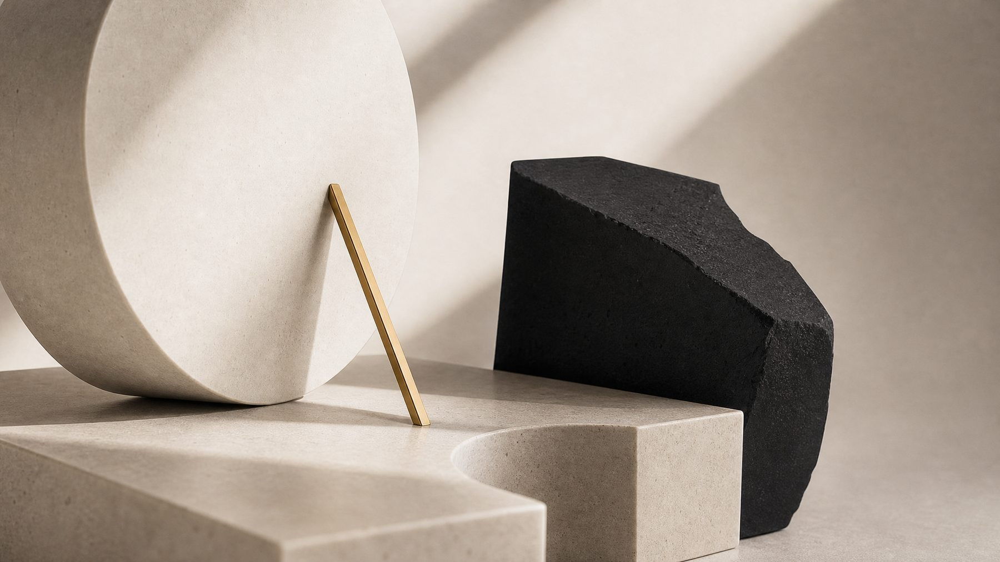
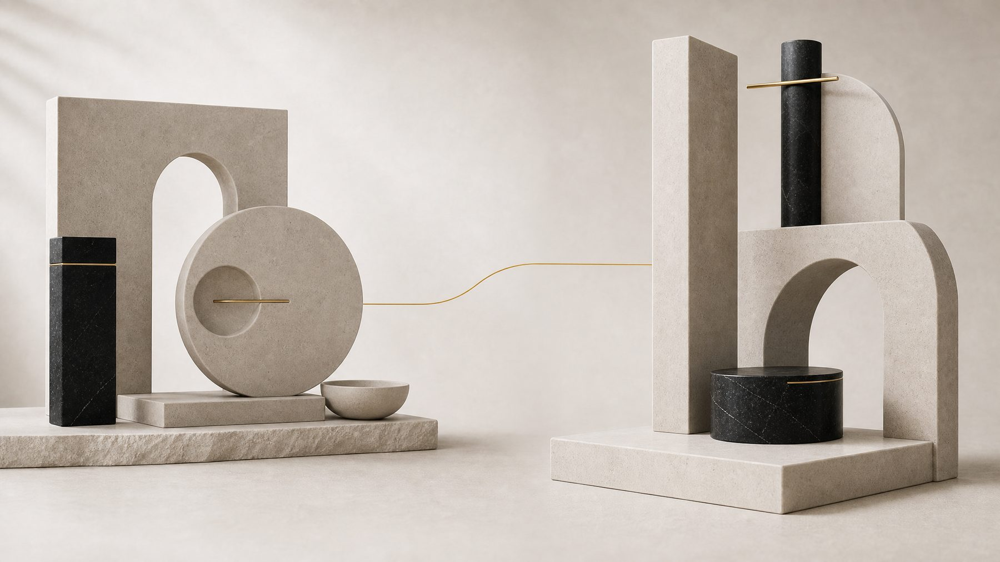
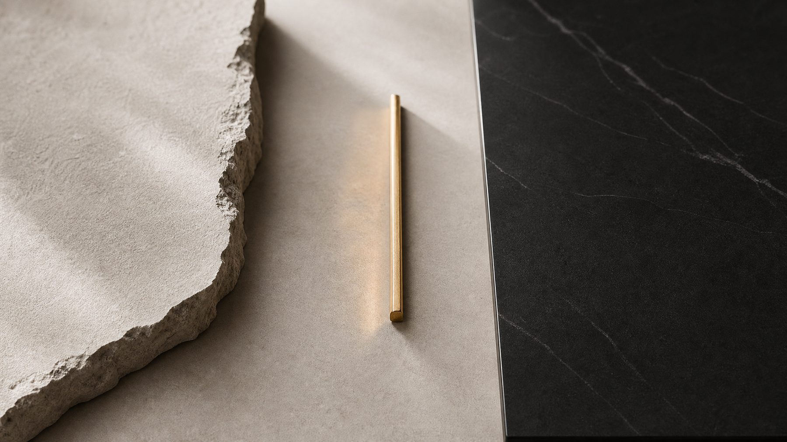
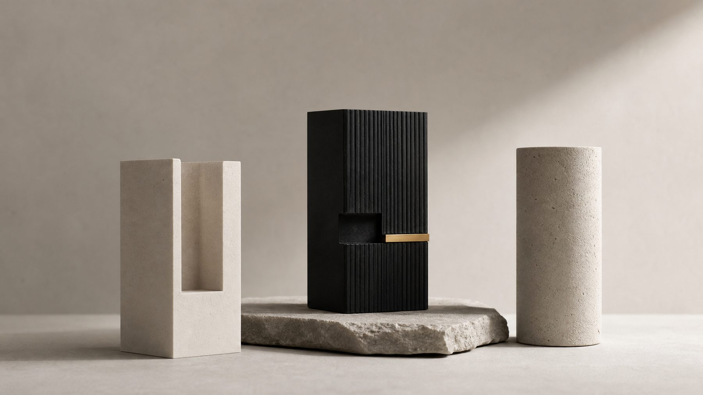
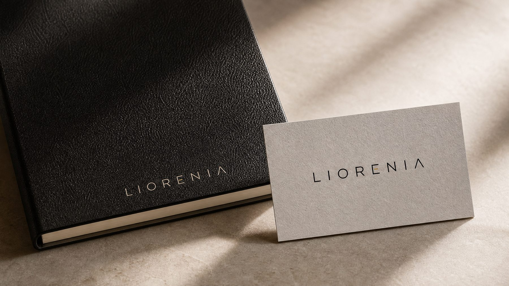
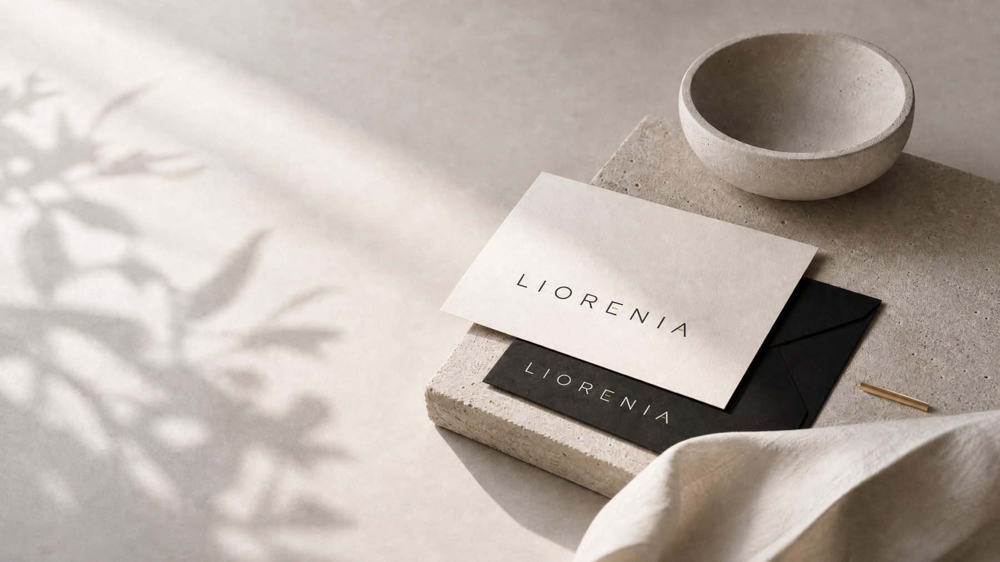

Decidir mejor, desbloquear antes y crecer con criterio.
Para dejar de trabajar para el software: automatizamos lo repetitivo, conectamos los sistemas que hoy están separados, convertimos datos y documentos en decisiones útiles y ordenamos la gestión diaria — con tecnología propia adaptada a la estructura real de cada empresa.
La tecnología se adapta a la empresa, y no la empresa a la tecnología.
La regla que ordena todo lo demás
La investigación, la ingesta y el procesamiento manual de datos siguen consumiendo semanas enteras. El coste no es solo presupuestario: es la lentitud para leer bien la situación, ordenar prioridades y actuar a tiempo.
El cliente termina financiando semanas de trabajo analítico y consolidación manual antes de obtener una lectura útil para decidir.
Se describe bien el problema, pero no se traduce en una intervención concreta sobre procesos, datos, ERP, CRM o tareas repetitivas.
El crecimiento desordenado, los sistemas que no conversan entre sí y los procesos manuales convierten una mejora pequeña en un proyecto costoso.
1. IA propietaria
Sistema propio de investigación, estructuración y aceleración diagnóstica que prepara contexto, hipótesis y focos antes de la lectura final.
2. Familia de producto
La familia LIO: líneas de producto replicables que se integran con sistemas heredados, datos dispersos y flujos reales de negocio.
3. Criterio senior
Visión directiva para leer matices, priorizar con criterio y convertir señales dispersas en una decisión defendible y accionable.
La investigación, la estructuración del contexto y la primera capa de diagnóstico no dependen de semanas de ingesta manual.
No partimos de cero en cada proyecto: desplegamos conectores, automatizaciones y activos ya construidos.
La lectura estratégica y la priorización final las lleva directamente el equipo fundador.
Las empresas están llenas de trabajo que no debería hacer una persona: datos que se teclean dos veces, sistemas que no se hablan, información que existe pero nadie encuentra, y gestión que vive en Excel, correo y memoria. Cada frente resuelve una de esas fugas.
Automatizaciones llave en mano y agentes que ejecutan trabajo real.
Lo que hoy hacen personas copiando y pegando, mañana lo hace el sistema.
Los sistemas que ya tiene la empresa se hablan entre sí: el ERP, la contabilidad, la web, lo antiguo con lo nuevo.
Sin islas de datos ni doble teclado.
IA sobre los documentos y procesos de la empresa, y cuadros de mando vivos.
Que la información que ya existe conteste preguntas y sostenga decisiones.
Las herramientas del día a día — clientes, personas y selección — adaptadas a la estructura real.
El negocio deja de vivir en Excel, correo y memoria.
Webs premium construidas con IA, rápidas y con la marca intacta.
Presencia a la altura, sin proyectos eternos.

Todo comparte motor — LIO Core — y todo empieza igual: por una lectura corta de dónde está la oportunidad.

El Mapa de Desbloqueo: una lectura corta — en 3 a 5 días, con precio cerrado — de dónde pierde la empresa tiempo, control o dinero, y qué desbloquearía primero. Si seguimos adelante juntos, se descuenta íntegramente. El entregable: un documento ejecutivo de 4 páginas que dirección entiende en 10 minutos.
Producto y tecnología que ya existen, ajustados a la estructura real: sus sociedades, sus permisos, su proceso. Semanas, no meses.
Cuota mensual: alojado, seguro, actualizado y evolucionando. Sin licencias por usuario — crecer no penaliza.
Y el dato siempre es del cliente: exportable, nunca atrapado.

Lee contexto
La IA analiza información pública, materiales disponibles y señales del negocio para construir una primera lectura del contexto, y deja prioridades, bloqueos y datos dispersos estructurados para empezar con más foco y menos ruido.
Prepara foco
El sistema prepara hipótesis iniciales, focos prioritarios y preguntas de alto valor antes de la conversación. El equipo fundador lee los matices que la IA no puede leer y calibra el momento real de cada empresa.
Ordena decisión
El resultado no es un informe técnico: es una lectura ejecutiva y un siguiente movimiento defendible para decidir qué desplegar y por qué.
Lo que absorbe la IA
Investigación de contexto, estructuración de información, preparación de hipótesis y síntesis de hallazgos.
Lo que no delegamos
Lectura entre líneas, priorización final, decisión comercial y recomendación ejecutiva.
La familia con la que más empresas empiezan: clientes, personas y selección sobre una misma base, conectados de origen.
Automatizaciones llave en mano y agentes que ejecutan trabajo real — y además la pieza que multiplica nuestra propia velocidad de despliegue.
Para quien paga sueldos por copiar, pegar y volver a teclear.
La relación comercial con la estructura real: multiempresa, permisos, pipeline.
Para quien gestiona el negocio con Excel, correo y memoria.
Ver producto →Histórico, alertas y confidencialidad auditada en un expediente único.
Para quien tiene la información de su gente en carpetas y cabezas.
Ver producto →Confidencialidad por rol, trazabilidad completa y RGPD dentro del flujo.
Para quien selecciona por correo y cruza los dedos.
Ver producto →Un candidato entra por Talent, pasa a ser empleado en People y su actividad comercial vive en Desk — conectados de origen, porque comparten motor.
La familia completa, por frentes
Automatizar y ejecutar
LIO less · LIO Flow · LIO Pilot
La fábrica de automatizaciones llave en mano, los flujos que produce y los agentes que ejecutan.
Conectar
LIO Bridge
Integración de sistemas antiguos y herramientas que no se hablan entre sí.
Saber y decidir
LIO Mind · LIO Lens · LIO Watch
IA documental y asistentes, lectura real de procesos y cuadros de mando vivos.
Gestionar el negocio
LIO Desk · LIO People · LIO Talent
CRM, expediente de personas y selección, sobre una misma base y conectados de origen con el resto.
Estar presente
LIO Front
Webs premium construidas con IA, con velocidad y sin renunciar a la marca.

Las dos mitades que este negocio exige: la mitad de negocio — años de estrategia, operaciones y dirección comercial vividos dentro de las empresas — y la mitad técnica — la construcción del motor y los productos. Tecnología propia, construida y gobernada en casa.

Si vemos un encaje real, activamos el Mapa de Desbloqueo. Si no, os lo diremos con la misma claridad con la que trabajamos.
Nuestro compromiso es simple: menos discurso, más lectura útil y más capacidad de ejecución — con IA propia donde aporta velocidad y criterio humano donde realmente importa.
hola@liorenia.com